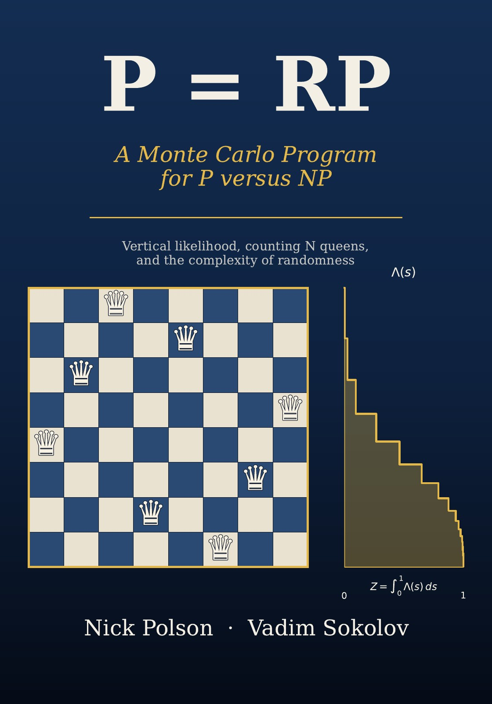

P = RP A Monte Carlo Program for P versus NP
By Nick Polson and Vadim Sokolov.


Description
Counting the solutions of the N queens problem is a rare event probability, and a rare event probability is the integral of a quantile function on the unit interval: the Lorenz curve identity behind nested sampling and vertical likelihood Monte Carlo. This book turns that observation into a Monte Carlo program for the P versus NP problem, stated as a sequence of theorems and conjectures with the gaps marked.
Part I sets out the problem from Hilbert, Turing and Shannon to the randomized classes RP and BPP, the barriers, the exponential time hypothesis, Kolmogorov complexity and pseudorandomness. Part II is the queens: Gauss and Nauck, the rare event reformulation, Simkin’s queenon, entropy and rate functions. Part III develops the machinery: product estimators, mixing times, cross entropy, Lorenz curves, vertical likelihood and its Yakowitz type error bounds, nested sampling, sequential Monte Carlo and generative Bayesian computation.
Part IV states the program. The sampling half proves that NP = RP is equivalent to polynomial time sampling and approximate counting of the completions of partial queens boards, and states as conjectures the mixing conditions under which a vertical walk on the energy levels would deliver them. The derandomization half, which gives the book its title, restates promise RP = promise P, which implies P = RP, as the known hitting set problem on the quantile axis and does not claim a proof. The book reports exact computations on the queens: the density of states, the giant component of solutions on conditioned boards, the shattering depth of the bottom level sets, and spectral gaps, all reproducible from the code in its repository, and ends with the open problems and their status.
How to cite
Polson and Sokolov (2026), P = RP: A Monte Carlo Program for P versus NP, edition 1, https://doi.org/10.5281/zenodo.23738431.
@book{polsonsokolov2026p_equals_rp,
author = {Polson, Nick and Sokolov, Vadim},
title = {{P = RP: A Monte Carlo Program for P versus NP}},
year = {2026},
publisher = {Independently published},
doi = {10.5281/zenodo.23738431},
url = {https://vsokolov.org/books/p_equals_rp/}
}Main results
- Coding theorem for the queens (Theorem 12.1, page 47): NP equals RP exactly when the completions of every queens board can be encoded and decoded in randomized polynomial time at their information content, the logarithm of the completion count up to a logarithmic term.
- Product proposals for the queens (Theorem 30.1, page 116): No importance sampling proposal with independent coordinates can beat crude Monte Carlo for counting N queens by more than a factor given by the entropy deficit of the solution marginals, which is small for N up to 12.
- Trapezoid on random nodes for bounded variation, no logarithm (Theorem 37.4, page 151): For any integrand of bounded variation V the trapezoid on random ordered nodes has bias at most V over 2(n+1) and mean squared error at most V squared over 2(n+1)(n+2), with no logarithm and no dependence on the number of steps.
- Learning the posterior mean matrix is equivalent to NP equals RP (Theorem 42.7, page 181): NP equals RP is equivalent to a randomized polynomial time algorithm, or a uniform polynomial size circuit family, computing the queens posterior mean matrix of every board to relative accuracy one over N squared.
- The main equivalence, NP = RP if and only if queens completions can be sampled or counted in polynomial time (Theorem 58.1, page 242): NP equals RP exactly when the completions of a partial queens placement can be sampled almost uniformly, the level sets of the queens energy can be sampled, or the number of completions can be approximated, in randomized polynomial time.
- Conditional FPRAS for the vertical walk with stratified quadrature (Theorem 43.1, page 185): Given a level set sampler and a ladder of at most 2K rungs with ratios at least one half, the vertical walk with stratified quadrature approximates the ground state count in time K squared over epsilon squared times the sampler cost, so counting reduces to level set sampling. Status: conditional on a level set sampler producing, in time C(N, delta), a sample within total variation delta of uniform on every sublevel set; the ladder hypothesis, that the ladder has at most 2K rungs and consecutive rung size ratios at least one half; for the optimality remark only, for the optimality remark only, that relative error epsilon in the product requires relative error of order epsilon over the square root of K in each rung ratio, which the book assumes and does not prove.
- Expansion of the bottom level set is equivalent to polynomial mixing (Theorem 56.5, page 237): By Cheeger’s inequality, a polynomial lower bound on the conductance of the giant component gives polynomial mixing of the lazy swap chain, and polynomial mixing conversely gives the conductance bound.
All 47 results of the book (31 proved, 7 conditional, 9 open) are on the page Results by chapter, each with its statement, status and number.
License: Text, figures and PDF: CC BY 4.0. Code: MIT.
This page is generated from the book’s repository (main). The numbers and pages are those of the PDF, version 1.0.0.